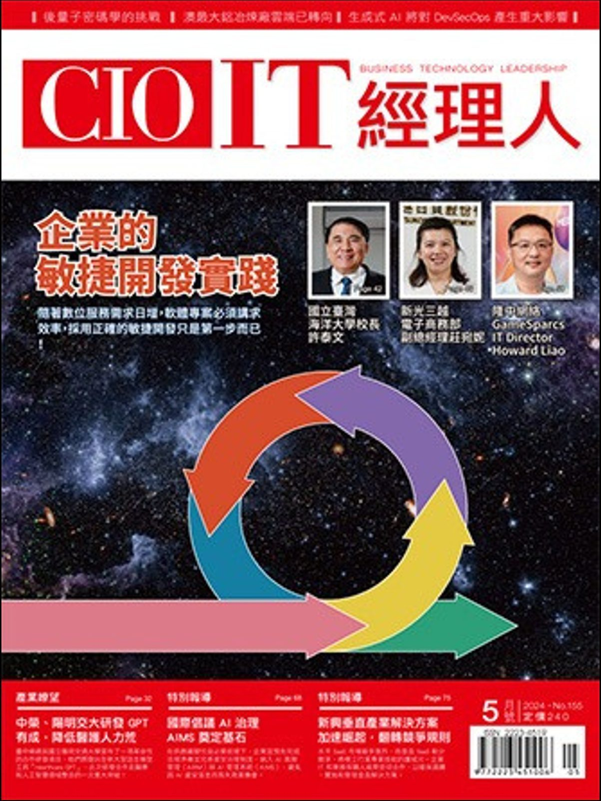
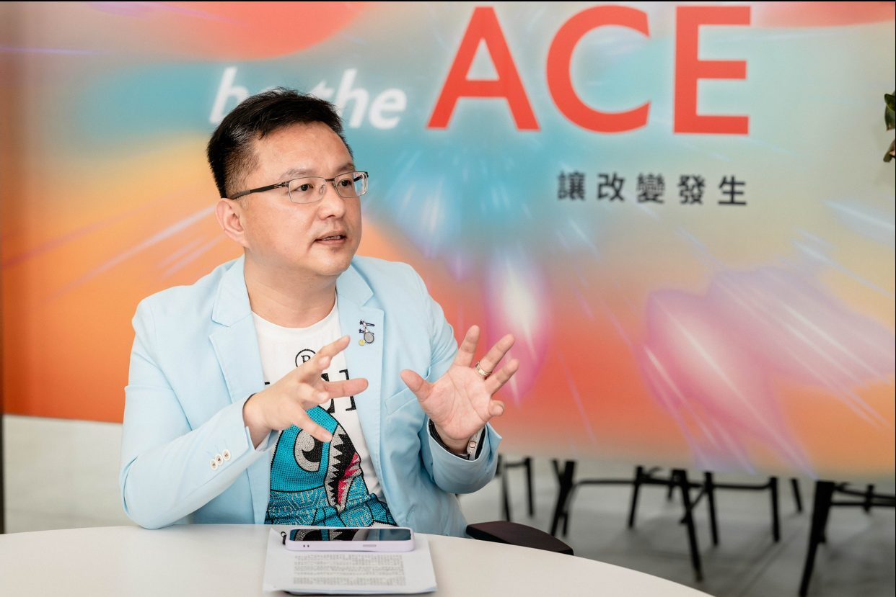
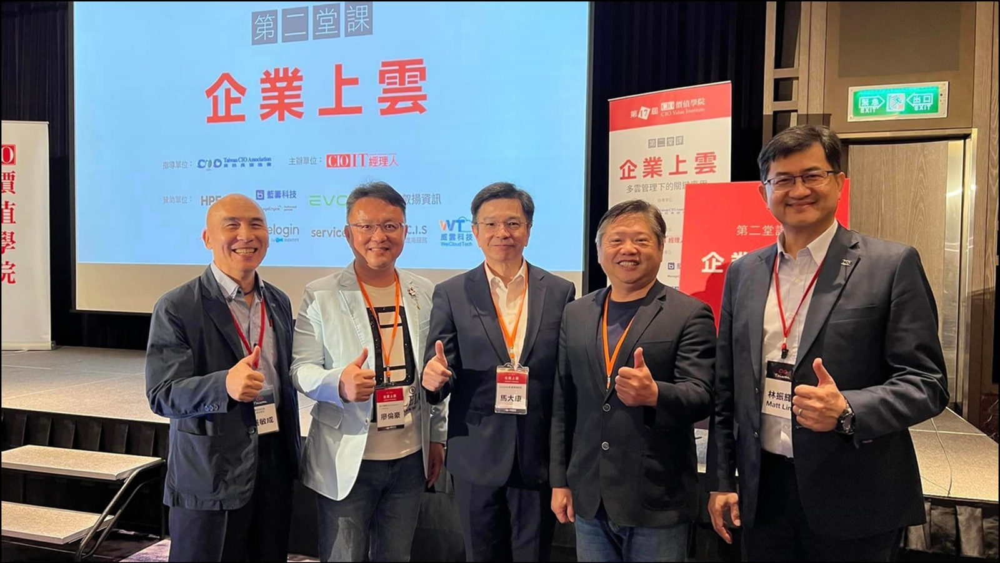
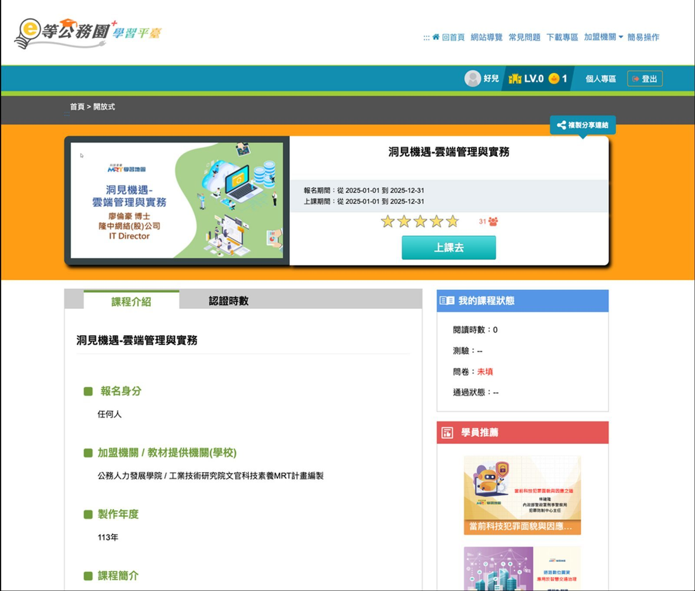
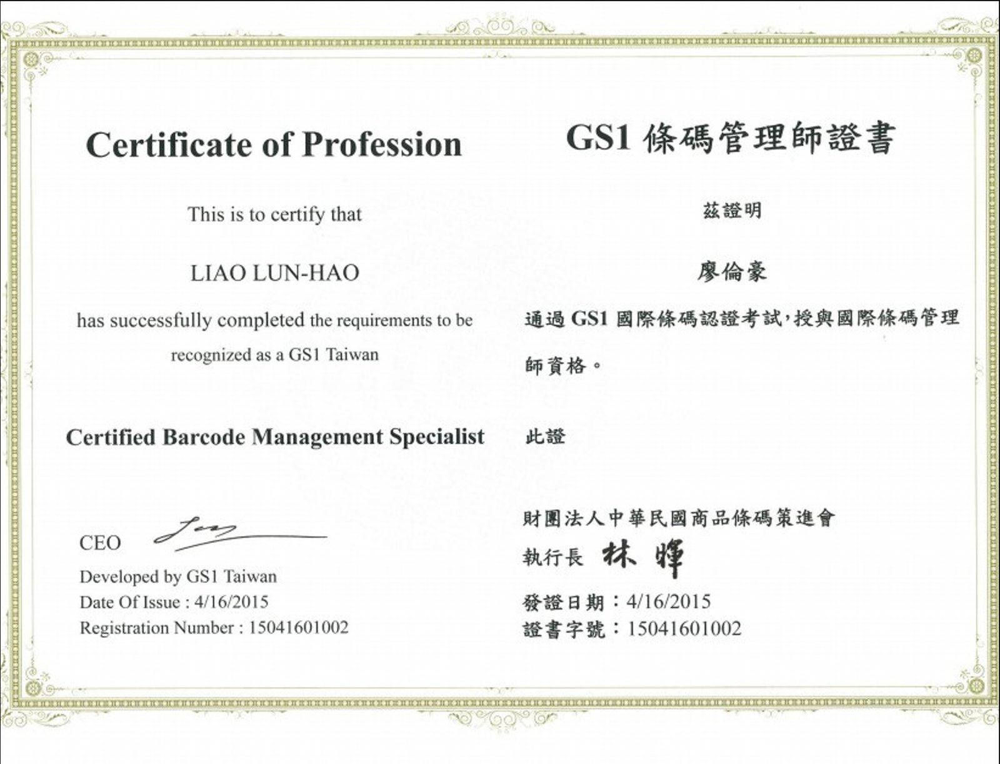
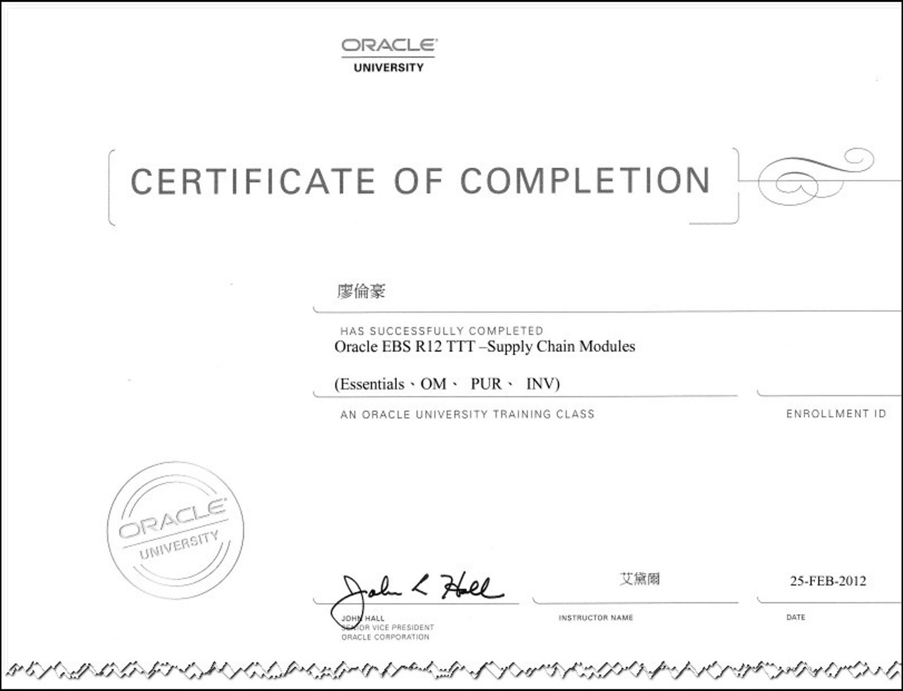
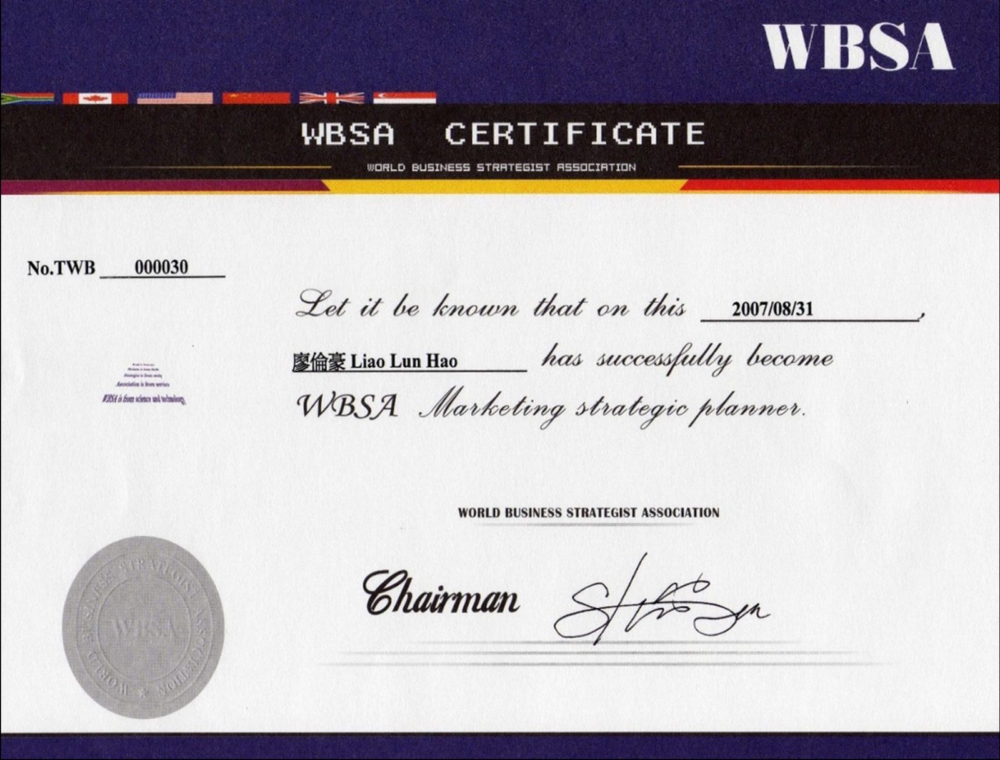

致用人主管：貴公司要的兩件事，我都親手做過
主管您好：
感謝人資同仁說明此職務的內容。資訊部門有 10 位同仁、運作超過 10 年，負責硬體設備與程式系統；公司期待的是系統優化整合，以及 AI 導入各部門。
系統整合： 我在泓晏科技（跨國電子製造）主導 SAP S/4HANA 導入，串接 MES、PLM、APS，產線良率提升 15%，集團 IT 維運成本降低 25%。二十多年前，我在健信科技（4502）帶過 Lotus Notes，了解 Notes 應用的結構與遷移時的難處。
AI 導入： 我在現職依 ISO 42001 建立 AI 使用規範，開設主管 AI 工作流課程，推動 AI 導入各部門，流程自動化效率提升 55%。
為什麼是鐿鈦： 鐿鈦離我家非常近，可以長期穩定投入；我長期在台中榮民總醫院擔任顧問，看好醫材產業，也認同鐿鈦的定位；現職需要常年出差、負責多個國家，我希望把心力集中在一家公司、一個團隊。
- 公司期待
- 優化並整合 MES、PLM、Notes、SAP；評估並推動 AI 導入各部門
- 系統整合實績
- 泓晏科技導入 SAP S/4HANA 串接 MES/PLM/APS，良率 +15%、IT維運成本 -25%；早年於健信科技帶過 Lotus Notes
- AI 導入實績
- 依 ISO 42001 推動 AI 導入各部門，流程自動化效率 +55%
- 帶領團隊
- 尊重部門十年累積，保留硬體與程式分工，增設整合窗口與 AI 種子同仁
- 為什麼是鐿鈦
- 住家鄰近可長期常駐；長期擔任台中榮總顧問，看好醫材並認同鐿鈦；不再常年跨國出差
我理解的鐿鈦：以精密加工為核心的醫材供應鏈要角
2026 年前三季營收 20.82 億元、年增 13.94%，7 月單月營收逾 2.9 億元，新成長線開始放量。
月營收走勢（新台幣百萬元） 2025/06 ～ 2026/09
2026 年 7 月單月營收約 2.9 億元 (290.8M)，年增近 50% 迎來爆發成長
| 月份 | 單月營收 (百萬) | 月份 | 單月營收 (百萬) |
|---|---|---|---|
| 2025/06 | 195.4 | 2026/01 | 212.5 |
| 2025/07 | 198.2 | 2026/02 | 196.2 |
| 2025/08 | 205.1 | 2026/03 | 224.8 |
| 2025/09 | 208.3 | 2026/04 | 236.1 |
| 2025/10 | 215.6 | 2026/05 | 242.7 |
| 2025/11 | 222.8 | 2026/06 | 249.5 |
| 2025/12 | 228.4 | 2026/07 ★ | 290.8 |
| 備註 | 成長基底穩健 | 2026/08-09 | 265.4 / 254.6 |
微創與機器人手術器械、心血管、內視鏡、活檢器材、連續血糖監測；脊椎導航自有品牌已在美國、墨西哥銷售。
精密扣件與半導體設備零組件；已切入前段清洗製程，計畫往中後段製程延伸。
應用於 AI 伺服器與矽光子高速測試，已完成客戶驗證，進入準量產。
資訊課題：資訊部門接下來要回答的五個問題
| 成長動能 | 對資訊系統的新需求 |
|---|---|
| 微波開關進入 AI ／矽光子測試準量產 | 多品種小批量的排程、良率追蹤與快速打樣 |
| 半導體設備零組件往中後段製程延伸 | 料號、BOM 與製程資料更複雜，系統間需要即時同步 |
| 手術機器人器械、脊椎導航自有品牌 | 設計資料、產品追溯與文件管理 |
| 醫材占營收 76%，客戶以美國為主 | 批號追溯與品質紀錄要完整、查得到 |
MES、PLM、SAP 之間的資料，是否還靠人工轉檔與重複輸入？
累積多年的簽核與文件，哪些保留、哪些移到 SAP/新平台、哪些淘汰？
存貨周轉約 222 天。庫存、良率與停機能否即時呈現給主管？
如何挑對題目，又不讓設計圖面與客戶資料外流？
10 位同仁如何從日常維運延伸到整合與 AI，而不打亂現有支援？
需求與實績對照：五個問題，我都有做過的答案
我在製造業做過 SAP、MES、PLM 的實際整合，也在近年負責 AI 導入與治理。曾帶領 30～50 人團隊，願意長期常駐台中。
| 課題 | 我做過的事 | 成果 |
|---|---|---|
| 系統整合 | 泓晏科技導入 SAP S/4HANA，串接 MES、PLM、APS，以加密 API 介接 | 產線良率 +15%；IT 維運成本 -25% |
| Notes 的下一步 | 二十多年前在健信科技（4502）帶領 Lotus Notes；光男／豐辰集團整合多套系統與 ERP 主檔 | 熟悉 Notes 應用結構與遷移難處 |
| 數據看得見 | 泓晏科技建置 BI 戰情室，即時呈現 OEE、良率與停機 | 化解數億元呆滯庫存 |
| AI 導入各部門 | 盛欣網絡依 ISO 42001 建立規範，開設主管 AI 工作流課程 | 流程自動化效率 +55% |
| 團隊跟上 | 曾帶領 30～50 人多元工程團隊（凌網科技亞太區 IT 團隊；盛欣網絡跨國團隊；建立知識管理與 SOP） | 稽核合規 100%；縮短新人學習曲線 |
職涯總覽：25+ 年，橫跨外商軟體、製造業與雲端平台
從資料庫底層架構走到集團資訊主管；更早，在健信科技工業（4502）帶過 Lotus Notes 應用。
電信級資料庫效能調校與高可用架構，支援全球金融與電信客戶。
部署軟體開發生命週期 (ALM) 平台，提升台灣與中國團隊交付效率。
跨國併購期間數據清洗與 ERP 主檔整併，整合多套 POS/CRM。
亞太區資料中心整合、高可用備援、統一 AD；專案稽核合規 100%。
主導跨五地廠區打通 SAP/MES/PLM/APS，良率提升 15%，集團 IT 維運成本降 25%，化解數億元呆滯庫存。
核心服務 GKE 容器化與 MongoDB Atlas 零停機架構，通過 ISO 27001 驗證。
落地 ISO 42001 負責任 AI 護欄，推動 Agentic AI 工作流，自動化效率提升 55%。
代表案例：三個案例，分別對應製造數據、資安治理與 AI 導入
泓晏科技：跨國電子製造數據整合
台灣、深圳、上海、昆山、泰國｜2018.03～2022.08
【處境】各廠區獨立運作形成數據孤島，產能不透明，引發數億元呆滯庫存危機。
【作法】推行 SAP S/4HANA Clean Core；打通 ERP/MES/PLM/APS；建置 ELK 行動 BI 戰情室。
隆中網絡 (6542)：ISO 27001 與零停機
台北、台中、杭州、成都、馬爾他｜2022.09～2025.04
【處境】每月推新品，關聯式資料庫難耐高併發，維運負擔極大。
【作法】核心服務遷至 GKE；重構至 MongoDB Atlas；建立 FinOps 模型並通過 ISO 27001。
盛欣網絡：ISO 42001 與 Agentic AI
台北、高雄、上海｜2025.05～至今
【處境】跨國雲端資產破碎，急需導入 AI 提升全球營運效率。
【作法】引進 ISO 42001 建立負責任 AI 護欄；開設主管特訓；嵌入日常維運。
管理基石與 Enterprise AI 企業架構
整合生醫製造預測經驗與跨國集團 Enterprise AI 雙層語意層架構，打造不外流機敏資料的實用落地平台。
五道治理護欄 × 五階段需求審查
業務主導、企業治理、集團 IT 賦能。五道治理護欄（AI、資料、資安、架構、法遵）套用在每個數位專案。
需求依「部門審查 → 需求門檻 → 數位指導委員會 → 核准投資組合 → 執行治理」排定優先順序。用在鐿鈦，可讓醫材、工業與微波開關三事業部的 IT 需求用同一套客觀門檻決策。

雙層語意層 (Dual Semantic Layer) 與製造多模型路由架構
借鑑大型生醫製造龍頭集團與跨國製造供應鏈實績，讓現場主管免寫程式即可「對話取數」，且設計圖面與營業秘密 100% 不出廠。
傳統 AI 查 ERP/MES 容易產生幻覺。透過雙層架構精準隔離：
- 1. 基礎語意層 (Data Semantic)：打通 PLM、SAP、MES 異質資料字典，建立料號、BOM、工單、批號之標準實體關係對齊。
- 2. 業務語意層 (Business Semantic)：將生產、品保、業務主管的日常中文自然語言，精準轉譯為符合權限的 SQL/API 查詢，實現「問話即出報表」。
借鑑生醫製造龍頭評估與導入之實戰架構：
- AutoML 智慧預測：針對精密加工機台刀具磨耗、微波開關量測良率與品質參數做前期預測與預知保養。
- MixRoute 智慧安全閘道：地端輕量開源模型（處理機敏圖面、工單）與雲端模型分流調度，節省 40% Token 成本，嚴防數據外洩。
為鐿鈦規劃的四個方案：串接系統、處理 Notes、導入 AI、資安為底線
把 PLM、SAP、MES 串成一條數據流
盡量使用 SAP 標準功能，減少客製化技術債。先串資料，再談 AI。
- • 少一次人工轉檔：逐一改為系統加密 API 介接，免除重複謄打。
- • 料號與 BOM 一致：PLM 設計變更自動同步 SAP 與 MES，杜絕用錯版本。
- • 庫存與良率即時化：南屯與后里兩廠用同一套度量即時呈現。
Notes 不一次換掉，而是分批找到歸宿
在健信科技帶過 Lotus Notes，深知 Notes 承載同仁多年習慣，遷移常卡在細微欄位與權限邏輯，主張三部曲：
AI 導入各部門（附各部建議清單）
推動方式：依 ISO 42001 訂規範，主管先學，資訊部先試，有成效再擴散。
資安是系統整合與 AI 的底線
系統串得越多、AI 用得越廣，資料外流與勒索風險就越高。我具備 ISO 27001 主導稽核員資格，帶領過驗證，專注於基本功：
- • 工廠網路隔離：機台與辦公網路嚴格分段，防止單一設備影響產線。
- • 不可竄改備份：重要系統與資料落實防勒索備份與復原演練。
- • 合規與圖面防護：機密設計圖與客戶規格不出廠，合規 100%。
到任計畫、指標與團隊：前 90 天先聽、再定、後動
- • 與主管、各部門訪談需求
- • 與 10 位資訊同仁一對一
- • 盤點 MES、PLM、Notes、SAP 介接現況
- • 提出系統整合藍圖
- • 完成 Notes 應用分類清單
- • 選定 AI 試點部門，排定預算
- • 完成第一項整合改善（如減少人工轉檔）
- • 第一批 Notes 應用開始移轉或淘汰
- • 發布 AI 使用規範，試點啟動
| 面向 | 指標名稱 | 第一年建議目標 |
|---|---|---|
| 系統整合 | 靠人工轉檔與重複輸入的流程數 | 依盤點基準明顯減少 |
| Notes | 應用盤點與分類完成率 | 100%，並完成第一批移轉或淘汰 |
| 系統穩定 | SAP、MES 可用率 | 依基準訂定改善目標 |
| 製造數據 | 戰情看板涵蓋的產線 | 涵蓋主要產線（南屯與后里） |
| AI 應用 | 導入並持續使用 AI 的部門 | 2～3 個部門 |
| 團隊 | 同仁完成整合與 AI 培訓 | 全員完成 |
媒體報導與演講：公開紀錄與證照佐證
隆中網絡任內的成果獲 CIO IT 經理人、iThome 與 MongoDB 報導；點擊圖片可放大檢視。










學歷、證照與產業影響力：學理、國際認證與實戰兼具
最好的技術主管，是把技術語言翻譯成經營與風險語言的人。
我希望用 25 年以上的系統整合經驗，協助鐿鈦整合 MES、PLM、Notes、SAP，並把 AI 導入每一個部門。長期在台中榮總擔任顧問，讓我更看好醫材產業，也更認同鐿鈦；住家鄰近，讓我能長期穩定投入。若主管方便，我很樂意安排面談。
鐿鈦相關數據皆取自公開資料，未使用公司內部資訊；個人經歷與成果數字取自本人履歷（Executive Portfolio 2025–2026）。
MoneyDJ：鐿鈦佈局手術機器人｜Win 投資月營收快訊｜HiStock 月營收報表｜鉅亨網個股資料｜FindBillion 財務指標｜富果法說會備忘錄｜民報可成攻醫材。